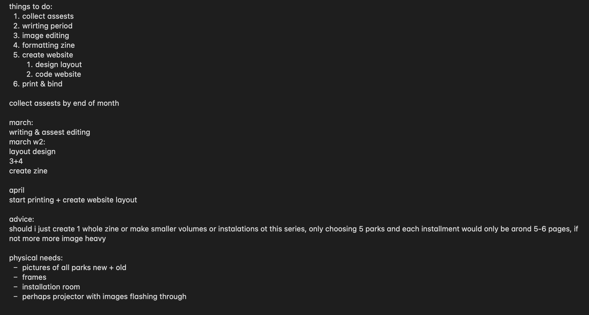

this week i further developed my idea and decided on which parks i am going to focus on.
the parks i will focus on are:
- brooklyn promenade (bk)
- collect pond park (man)
- washington square park (man)
my reasoning behind these parks is they have all been places i have frequently visited due to being close to where i live. my idea right now is to rent a dslr from the equipment room and take some landscape shots of these parks. in addition to these assets, i will also use existing images i already have on my phone. i would then use photoshop to prepare them for risograph printing.
i also have decided that instead of creating 1 large zine, to create instead a mini 4-part zine series, with each zine focusing on a different park. i feel like this would make the project more cohesive and well orgaized, and also leave the option open to continue the series after this semester ends.
i used this week to focus on getting organized and getting a solid project plan with benchmarks to aim for. here it is:
project plan

timeline
- feb: collect assets
- march: design zine
- april: print/code website